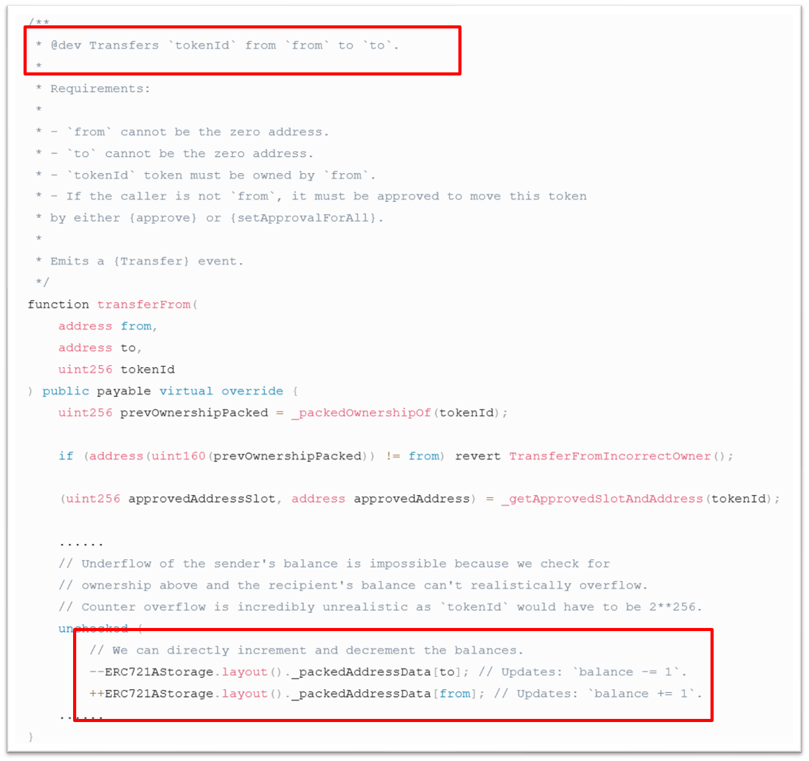

Github Repo address: https://github.com/AntChainOpenLabs/Smart-Intermediate-Representation
Background
Smart Intermediate Representation (hereinafter referred to as SIR) is a smart contract compiler framework independently developed by Ant Group. Paired with high-performance runtime, it is applied to the WASM ecosystem. On a mission of compiling multi-target and multi-scenario smart contracts more securely and reliablely, it is committed to providing a computing engine driven by IR, both on and off the chain.
Typical customers:
● On-chain and off-chain platform users with security requirements for contracts.
● Layer 2 platforms aimed at improving computing performance in transaction.
● Smart contract audit experts assessing contracts’ security and reliability.
● Developers of multi-scenario smart contracts’ compilers.
What is SIR
Unlike the responsibilities carried by LLVM IR, SIR is not a universal IR, but is the minimal extendable set specialized for the field of smart contracts. SIR encapsulates commonly used instruction sequences in the domain of smart contracts into intrinsic functions, such as built-in block and transaction methods, or abstracts instruction sequences into opcodes, like global storage instructions, etc. Additionally, SIR utilizes a metadata extension mechanism, which allows for convenient and quick appending of information following type definitions, function definitions, and instructions. This mechanism can append information relevant to different scenarios (computation, ZK, or verification):
1 | type <ty_name> = ... !<metadata_name> !<metadata_index> ... |
In principle, SIR requires users to pass objects by reference rather than by using pointers. Excessive use of “physical” instructions to directly construct contracts will undoubtedly greatly increase the complexity of the compiler due to a lack of abstraction and can also lead to security issues. Therefore, such a design choice in SIR is not only safe but also avoids the problems associated with manipulating pointers and having to deal with “physical” details. This effectively separates the high-level expression of smart contracts (language frontend) from the physical machine.
Why do we need SIR
On one hand, SIR can abstract more smart contract domain-specific opcodes and intrinsic functions. This is convenient for any frontend language to access SIR. For multi-ecosystem compiler developers, lower-level and general optimizations, such as pointer analysis, dead code elimination, loop invariants, etc., can be pushed down to LLVM (SIR will be compiled into LLVM IR). SIR focuses on opcode compression and abstraction (comparable to the CREATE2 instruction in Solidity/Yul), gas optimization, contract security analysis, Linear Typing/Asset Safety, and ZKP topics.

Another goal is to serve as an ecologically neutral SIR, expected to serve different ecosystems and scenarios, not limited to Ethereum or other blockchains supporting the WASM virtual machine. SIR retains the entire semantics of smart contracts, so any gas optimizations and logical vulnerability detection capabilities made on SIR can be applied to the accessed frontend programming languages. For smart contracts, SIR is a more straightforward interface than LLVM IR, which is particularly important for helping different frontend languages adapt to Ethereum’s Layer 2 scenarios.
SIR Highlight Features
Open multi-language frontend and multi-scenario support
By compiling Yul into SIR and supplementing the relevant platform’s hostapi and runtime to support Ethereum ecology programming language frontends, it can be applied to Ethereum Layer 2 scenarios. Compiler developers can compile their custom smart contract frontend language into SIR and adapt it to the target blockchain. SIR can support arbitrary frontend languages and multiple on-chain and off-chain computing scenarios such as Layer 1, Layer 2, and Oracles.
Intent consistency analysis based on SIR
This can be seen as providing users with a user-friendly AI Lint tool
For developers lacking expert knowledge (smart contract audit), intent consistency verification technology can map SIR to an AI model that is easy to verify through code conversion technology and infer whether the business intent is consistent with the source code logic. This feature not only focuses on potential logical defects in the contract itself but also whether the smart contract meets the rich and complex business intents in the blockchain and Web3 scenarios. Therefore, compared to existing work, intent consistency analysis aims to comprehensively enhance the security consistency at the business and financial transaction levels. For example, the annotation mentions transferring from ‘from’ to ‘to’, but the actual code increases the balance of ‘from’ and decreases the balance of ‘to’, which is inconsistent with the intent.
| The comment mentions transferring from 'from' to 'to', but the actual code increases the balance of 'from' and decreases the balance of 'to', which is inconsistent with the intended implementation. | |
|---|---|
|  | |
Metadata extension mechanism
As mentioned earlier, SIR is both a language (semantic) and a compiler designed to support smart contract computation, intent consistency detection, and zero-knowledge proof. SIR can not only express operational semantics as a conventional smart contract language, but also extend it into the ZK domain to express the denotational semantics of Abstract Circuit SIR (planned) using the Metadata mechanism, which can be understood as a multi-layer extension of IR. The Metadata mechanism can be applied to any scenario or domain that wants to be extended for sure.
Roadmap and Outlook
Startup Phase
In the startup phase, we will reuse LLVM’s WASM bytecode generation feature, with a focus on building support for Layer 2 Rollup (Ethereum compatible) and intent consistency analysis in two scenarios, and strengthen SIR itself.
In the future, this capability is expected to be implemented in the ZAN contract audit business: For developers, there may be instances where they fork a piece of code and make minor modifications. For example, forking an ERC20 standard token contract and making partial changes before releasing the new code contract. The issue at hand is whether these modifications have altered the original intention of the source code. In addition to the consistency between the code and the intentions described in the natural language annotations, we also hope to support the detection of consistency between two contracts, with a focus on serving the Smart Contract Analysis (SCA) scenarios, to ensure that any changes in the business logic intentions of the forked contracts can be identified.

Mature Phase
We aim to establish our own WASM bytecode export functionality, independent of LLVM, achieving a self-contained ecosystem. At the same time, we will have a Standalone VM and a lightweight compilation framework. This preparation is in order to become the LLVM of the smart contract domain.

Final Phase
Leave it to the future, let time tell. The core team will gradually introduce new features and modules for SIR, and we also look forward to outstanding buidlers joining us in this endeavor. We are excited to see you, the reader of this message, participate in shaping the future of SIR! WAGMI (We’re All Gonna Make It).

About
AntChain Open Labs
AntChain Open Labs is a research center initiated by AntChain and world leading computer scientists in the area of foundational trust technologies. It is dedicated to building a secure, transparent and reliable Web3 infrastructure driven by innovative research and aiming to advance transformative services.
Website：https://openlabs-intl.antdigital.com/home
ZAN
ZAN, powered by AntChain Open Labs, provides solutions for Web3, such as Smart Contract Review, KYT, KYC, Node Service, and more.
Website | Telegram | Discocd | Twitter | More